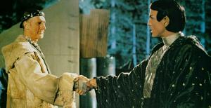
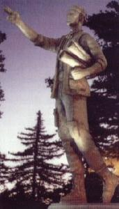

|
|
Zefram Cochrane |
|
|||||||||
|
  |
Dati Personali
Nato nel 2030 negli Stati Uniti d'America (Metamorphosis).
Zefram Cochrane è stato il primo umano a lanciare una nave in grado di
raggiungere velocità warp: il 5 aprile
2063 la
Phoenix supera infatti
per la prima volta nella storia terrestre la barriera della velocità della luce.
Nel medesimo giorno, la traccia di curvatura viene rilevata dalla nave
vulcaniana
T'Plana-Hath, in ricognizione nel sistema solare terrestre, che
atterra a Bozeman, nel Montana, stabilendo il primo contatto tra la razza
umana ed una razza aliena (First
Contact).
Grazie ai suoi successi, Cochrane diventa un eroe della razza
umana prima e della Federazione poi, tenendo discorsi e conferenze in giro per il
mondo, come quella, nel 2073, nel corso della quale
pronuncia la famosa frase «Don't
try to be a great man. Just be a man, and let history make its own
judgements», destinata a rimanere nella storia (First
Contact).
In seguito, si dedica allo sviluppo del motore warp con
Henry Archer.
Nel 2119 è l'invitato speciale per la cerimonia di inaugurazione del Warp 5 Complex, complesso che si propone l'obiettivo di accelerare lo sviluppo dei
motori warp e permettere a tutti gli umani di esplorare in sicurezza lo
spazio profondo.
Cochrane, divenuto già da tempo cittadino di
Alfa Centauri, intorno al 2125
parte per una destinazione sconosciuta, per non far più ritorno (Broken
Bow).
Sul suo conto iniziarono a circolare voci sul fatto che stesse pilotando un
vascello a curvatura sperimentale quando è scomparso, tanto che nel
2152 Jonathan Archer, incontrando molto più in là di dove qualsiasi nave
terrestre si era avventurata prima di quell'epoca una navetta contenente
quelli che sembravano essere dei resti umani, pensa subito al fatto che
potessero appartenere a Cochrane (Future Tense).
Il vero destino di Cochrane viene appreso solamente da Kirk,
Spock e McCoy nel
2267, in data stellare 3219. Lasciando
Alfa Centauri Cochrane raggiunge un
planetoide nel sistema di Gamma Canaris dove un'entità conosciuta come il
Compagno provvede per lui, ma quest'informazione non è riportata da
nessuna parte negli archivi né della Federazione né della
Flotta in quanto i
tre hanno promesso di non menzionare questi fatti. Secondo gli archivi
ufficiali, Cochrane
risulta disperso nel XXII secolo (Metamorphosis).
Uno dei suoi cibi preferiti sono i
pierogi al formaggio
(Homestead).